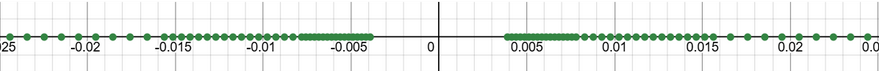
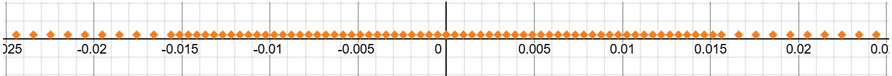

Floating Point
Table of Contents
What numbers do we want to store?
IEEE-754 was designed as a “universal” number system (in order to encourage consistency). As such, we want to handle:
- really large numbers (e.g. Avogadro’s number \(6.022 \times 10^{23}\))
- really small numbers (e.g. Planck’s constant \(6.626 \times 10^{-34}\))
Our goal is to store numbers to a certain relative precision. If we can’t store a number exactly, we make sure that we can store a number that’s accurate to within 0.001% of the actual number. This allows us to store a much wider range of numbers, but some numbers get “rounded” to the nearest representable number. Therefore, each operation in a floating-point scheme causes some slight error.
Scientific notation already does this! We have one bit (for the sign), then a few decimal digits called the mantissa, and an exponent. Four decimal digits means we get precision up to \(10^{-3}\) (0.1% error).
1. The Base Model
Our goal is to store numbers to a certain relative precision. If we can’t store a number exactly, we make sure that we can store a number that’s accurate to within 0.001% of the actual number. This allows us to store a much wider range of numbers, but some numbers get “rounded” to the nearest representable number. Therefore, each operation in a floating-point scheme causes some slight error.
Scientific notation already does this! We have one bit (for the sign), then a few decimal digits called the mantissa, and an exponent. Four decimal digits means we get precision up to \(10^{-3}\) (0.1% error).
A floating point number shall save one bit for the sign (0 for positive, 1 for negative), x bits for the exponent, and y bits for the mantissa, stored like so:
SXXX MMMM
The mantissa will be a regular unsigned integer. We have a few options to store the exponent as a signed integer. Adding, subtracting, multiplying, and dividing affects the exponent in complicated ways, and it is unclear which system is better here. However, for comparisons, biased numbers work the best. Thus, we store our exponent using a biased number scheme.
Since we work with binary, we’ll use scientific notation with a base of 2. Thus, the floating point number represented by SXXX MMMM is equivalent to \((-1)^{\text{S}}\cdot\text{0bM.MMMM}\cdot 2^{\text{0bXXX} + (-3)}\). The \(-3\) represents our bias.
1.1. Optimization 1: The Implicit 1
Our mantissa is guaranteed to not have any leading zeros. In binary, since every digit is either 0 or 1, the MSB of the mantissa must be a 1. Thus, we can save one bit by not including the first 1, making it implicit.
However, the problem with this is that we can no longer represent the number 0. This is known as an underflow — the result of computation gets too small to be represented:

Our solution is denormalized numbers. We change the behavior of exponent 0b000...0 so that its range extends to 0 — we treat the number as if it had an exponent of 0b000...1, but with a leading 0 instead of a leading 1:

If the exponent bits are all zero, then it instead represents \((-1)^{\text{S}}\cdot\text{0b0.MMMM}\cdot2^{\text{0bXXX}+(-3)+1}\).
1.2. Optimization 2: Infinity
We would like to have a way to represent results of “infinity,” as well as reserve some “NaN” values for error handling. To do so, we reserve the exponent of all ones, so that we can use the mantissa to represent either infinity or NaN.
2. IEEE-754
IEEE-754 is a standard that incorporates the above base model and optimizations. A 32-bit IEEE-754 standard binary floating point number uses 8 bits for the exponent and 23 bits for the mantissa:
SXXX XXXX XMMM MMMM MMMM MMMM MMMM MMMM
If the exponent bits are nonzero and not all ones, then it represents the number \((-1)^{\text{S}}\cdot\text{0b1.MMMMMMMM}\cdots \cdot2^{\text{0bXXXXXXXX}+(-127)}\).
If the exponent bits are all zero, then it instead represents \((-1)^{\text{S}}\cdot\text{0b0.MMMMMMMM}\cdots \cdot2^{\text{0bXXXXXXXX}+(-127)+1}\).
If the exponent bits are all ones, then:
- if the mantissa is all zeros, it’s either positive or negative infinity depending on the sign bit
- otherwise, then it’s a NaN
IEEE-754 also specifies certain combinations of exponent and mantissa bits with special names:
- Single precision (also known as
float):- 8 exponent bits, -127 bias, 23 mantissa bits (32 bits total)
- Double precision (also known as
double):- 11 exponent bits, -1023 bias, 52 mantissa bits (64 bits total)
- Quad precision:
- 15 exponent bits, 112 mantissa bits
- Half precision:
- 5 exponent bits, 10 mantissa bits